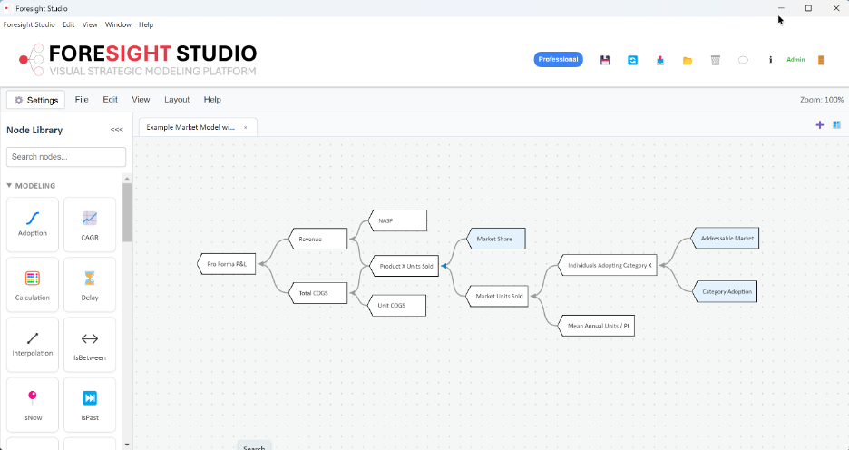

Introducing Foresight Studio™, the premier strategic forecasting and financial modeling platform for pharmaceutical, medical device and diagnostics opportunity analyses.

Foresight Studio is built around some simple, but fundamental premises
Complex dynamics can (and should) be represented simply.
A picture is worth a thousand words (or rows in a spreadsheet).
Transparency is an imperative.
Uncertainty is everywhere; ignore it at your own peril!
Foresight Studio is a local-first, interactive visual modeling platform designed for finance, product, strategy, and engineering teams to build, simulate, and analyze complex market models.